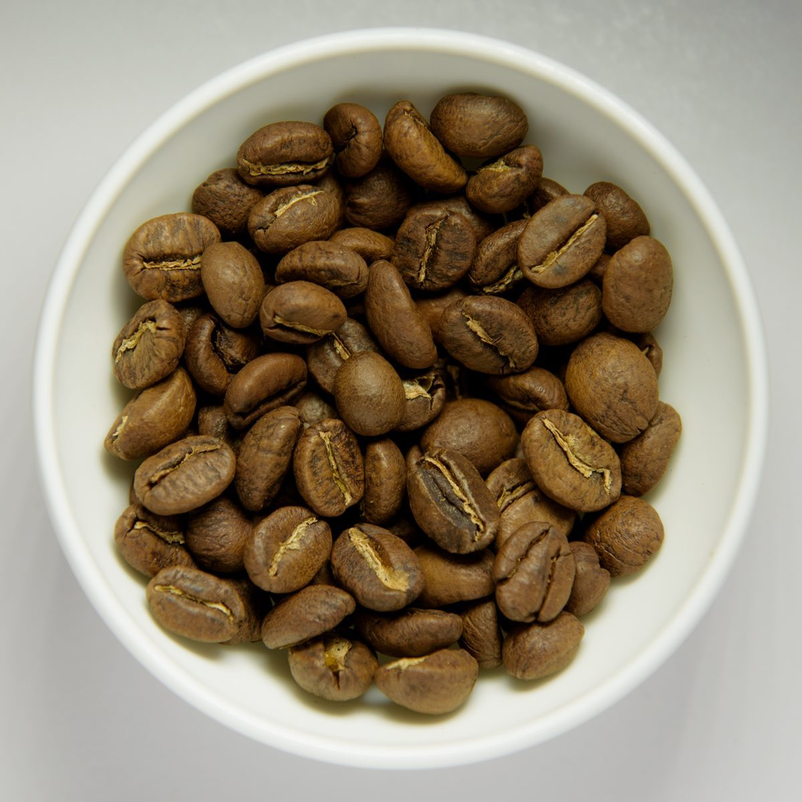
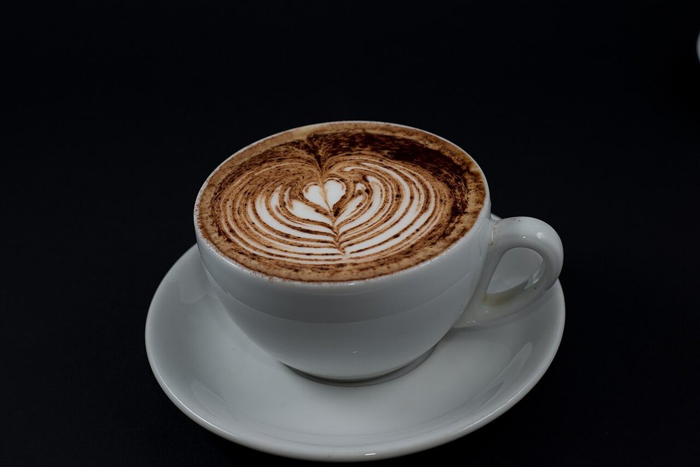
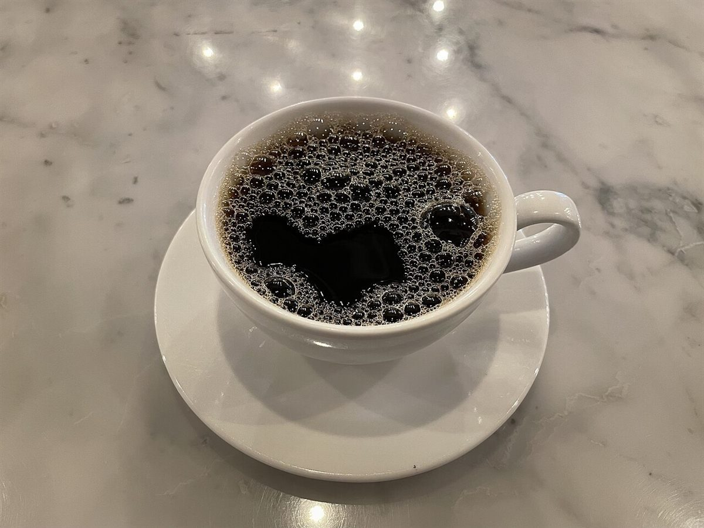

制作側の連想
八つのボールの直径帖
屋号の由来は分かりません。制作側は「MARU」という響きから、丸いものを連想しました。「MARUMOKU」は8文字。そこで、8つの丸いボールの直径を文字に1つずつ当てて、小さい順に並べる作りにしています。ボールの大きさは一般的な規格のおよその目安で、お店とは関係がありません。制作側の連想で、お店の理念・由来とは無関係です。
下の円は、直径を同じ比率で並べたものです(画面の大きさに合わせて縮尺は変わります)。
- M卓球ボール約40mm
- Aゴルフボール約43mm
- R硬式テニスボール約67mm
- U硬式野球ボール約73mm
- Mソフトボール約97mm
- Oバレーボール約210mm
- Kサッカーボール約220mm
- Uバスケットボール約240mm
同じ直径で切り抜く
8つの円に、8枚の写真(イメージ)
写真はお店のものではなく、国外または撮影地不明のフリー素材です。円の大きさは上の直径帖と同じ比率です。







ご案内
お店のこと(確認できたものだけ)
| 所在地 | 〒882-1101 宮崎県西臼杵郡高千穂町三田井１１４５−１２ |
|---|---|
| 電話 | なし |
| 営業時間 | 準備中 |
| 定休日 | 準備中 |
| ご予約 | 準備中 |
| 駐車場 | 準備中 |
| SNS | Instagram @marumokucoffee |